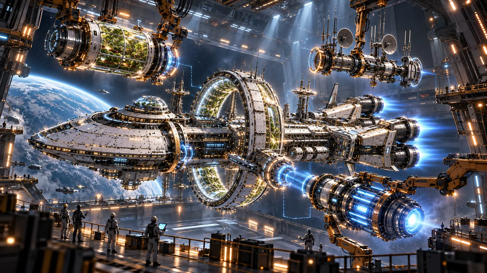

ARK-01 · PRIMARY ASSEMBLY
Bring the ship to life.
PROTOCOL 03
VOICE ON
SOUND ON
ORBITAL ASSEMBLY BAY
03 / COMMISSIONING

BIO-DOME
REACTOR CORE
SENSOR ARRAY
One ship. Three primary systems. Ready for departure.